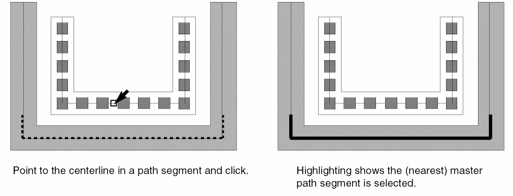
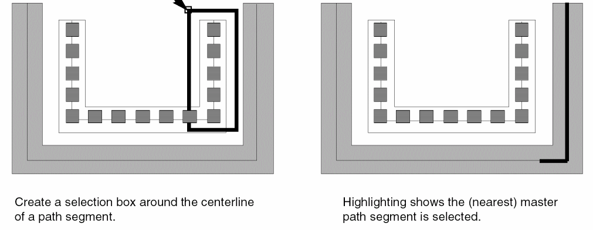
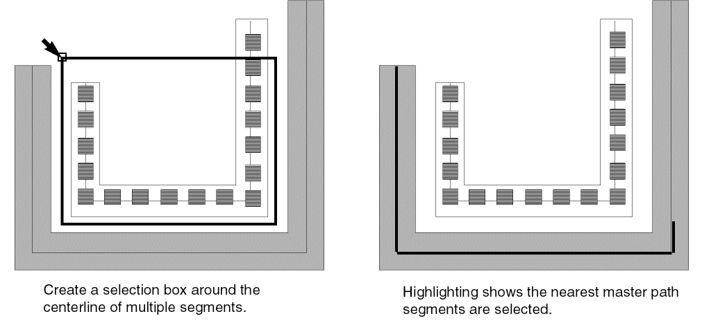
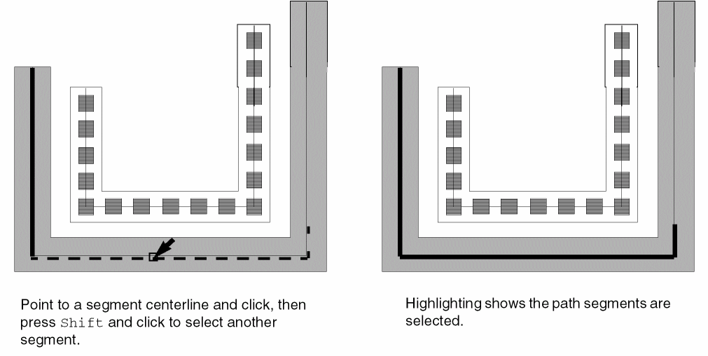

Selecting Multipart Path Segments
In partial selection mode, you can select one or more segments of the master path in a multipart path. You cannot select segments of a subpart. If you attempt to select a subpart segment, the nearest segment of the master path is selected.
In partial selection mode, if you click the edge of a subrectangle, the nearest master path segment is selected.
To select a single master path segment, do one of the following in partial selection mode:
-
Point to the middle of the centerline in a master path segment or subpath segment and click on it.
As you point, the nearest master path segment is highlighted with dotted lines.
 -
Create a selection box around a master path or subpath segment. Make sure both end points of the segment centerline are inside the box.

To select more than one master path segment, do one of the following in partial selection mode:
-
Create a selection box around multiple master path or subpath segments. Make sure the end points of each segment centerline are inside the box.
 -
Point to the middle of the centerline in a master path or subpath segment and click on it. Press
Shiftand click to select additional segments.
As you point, the centerline of the nearest master path segment is highlighted with dotted lines.

Related Topics
Return to top